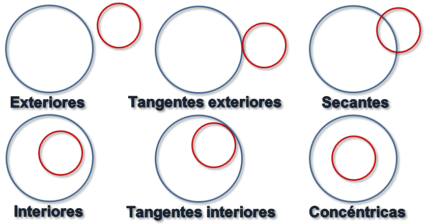

Tema 4
Geometría Analítica
Distancia entre dos puntos
La distancia entre dos puntos \[A(a_1, a_2)\] y \[ B(b_1,b_2)\] es el módulo del vector \[ \vec{AB} \].
\[d(A,B) = |\vec{AB}| = \sqrt{(b_1 - a_1)^2 + (b_2 - a_2)^2}\]
1Calcula la distancia entre los siguientes pares de puntos:
- A(0,3) y B(7,8)
- A(2,7) y B(1,5)
Punto medio de un segmento
El punto medio de de un segmento determinado por dos puntos \[A(a_1, a_2)\] y \[ B(b_1,b_2)\] se calcula:
\[\Big(\frac{a_1+b_1}{2}, \frac{a_2+b_2}{2}\Big)\]
2Calcula el punto medio del segmento determinado por los siguientes pares de puntos:
- A(0,3) y B(7,8)
- A(2,7) y B(1,5)
Ecuaciones de la recta
Ecuación vectorial
Ver en GeogebraEcuación vectorial
\[ \overrightarrow{X} = \overrightarrow{O} + \lambda \cdot \overrightarrow{V} \]
\[(x,y) = (o_1, o_2) + \lambda \cdot (v_1, v_2)\]Ecuación paramétrica
Separamos las componentes x e y del vector.\[\begin{cases} x = o_1 + \lambda \cdot v_1\\ y = o_2 + \lambda \cdot v_2 \end{cases} \]
Ecuación continua
Despejamos \[\lambda\] en cada ecuación e igualamos\[ \frac{x - o_1}{v_1} = \frac{y - o_2}{v_2} \]
Ecuación general o implícita
Pasamos todos los términos a un miembro de la ecuación.
\[ Ax + By + C = 0 \]
Vector normal
Dada una recta en su forma general \[ Ax + By + C = 0 \] el vector (A,B) se conoce como vector normal a la recta y es perpendicular al vector director de la recta (y por lo tanto a la recta en si)
Si \[ \vec{v}(v_1,v_2)\] es el vector director, entonces su vector director será \[ \vec{n}(-v_2,v_1)\]
Ecuación explícita
Despejamos y\[y = m \cdot x + n \]
Pendiente de una recta
Dado un dos puntos \[A(x_1, y_1)\] y \[B(x_2, y_2)\] y un vector director \[\vec{AB}=\vec{v}(v_1,v_2)\]
\[m = \frac{y_2 - y_1}{x_2 - x_1} = \frac{v_2}{v_1} = tan(\alpha)\]
Si dos rectas son perpendiculares sus pendientes cumplen \[m' = -1/m\]
Ecuación punto-pendiente
Recta que pasa por O(x_0, y_0)
\[y - y_0 = m \cdot (x-x_0)\]
3Escribe la ecuacion de la recta en todas sus formas e indicando los nombres en cada uno de los siguientes casos:
- Vector director \[\vec{v}(2,3)\] y pasa por A(1,5).
- Pasa por \[A(2,5)\] y por \[B(3,7)\].
- Tiene por vector normal \[\vec{n}(2,-4)\] y pasa por \[A(2,7)\].
- Tiene por pendiente \[m=3\] y pasa por \[A(1,9)\].
- Forma un ángulo \[\alpha=45º\] con el eje de abscisas (el de la x's) y pasa por \[A(2,3)\]
4Dada la recta \[r \equiv 2x + 3y -7 = 0\] calcula:
- El vector director y la pendiente.
- La ecuación general de la recta que pasa paralela a r y que pasa por \[P(3,1)\].
- El vector normal y la pendiente de la recta perpendicular a r.
- La ecuacion general de la recta perpendicular arque pasa por el punto \[Q(1,−5)\]
Posición relativa de dos rectas
Según su posición:
- Secantes
- Paralelas
- Coincidentes
Podemos analizarlo de diversas formas:
- Sistema de ecuaciones
- Pendientes
- Vector director
Sistema de ecuaciones
Un sistema de ecuaciones podía ser:
- S. Incompatible: Rectas paralelas.
- S. Compatible Determinado: Rectas secantes (el punto de corte es la solución).
- S. Compatible Indeterminado: Rectas coincidentes
Pendientes
Dadas las pendientes \[m_1\] y \[m_2\] de dos rectas:
- Si \[m_1 = m_2\]: Rectas paralelas o coincidentes
- Si \[m_1 \neq m_2\]: Rectas secantes.
Vectores director
Dados los vectores director \[v_1\] y \[v_2\] de dos rectas:
- Si \[v_1\] y \[v_2\] son linealmente dependientes: Rectas paralelas o coincidentes
- Si \[v_1\] y \[v_2\] son linealmente independientes: Rectas secantes
5Estudia la posición relativa de las siguientes rectas:
- \[r \equiv 3x−5y+ 4 = 0 \] y \[s \equiv 3x+ 5y−3 = 0 \]
- \[r \equiv x−3y+ 1 = 0\] y \[s \equiv −2x+ 6y−2 = 0\]
- \[r \equiv y = 2x+ 3\] y \[s \equiv x= \frac{y}{2}\]
Ángulo entre dos rectas: vectores directores
A partir de los vectores directores o los vectores normales
Ángulo entre dos rectas: pendiente
\[m_r = tan(\alpha_r)\] y \[m_s = tan(\alpha_s)\]
\[ tan(\alpha) = \tan(\alpha_r - \alpha_s) = \\ = \left| \frac{tan(\alpha_r) - tan(\alpha_s)}{1 + tan(\alpha_r) \cdot tan(\alpha_s)}\right| = \left|\frac{m_r - m_s}{1 + m_r \cdot m_s} \right| \]
6Calcula el ángulo que hay entre los siguientes pares de rectas:
- \[ r \equiv y = 0 \] y \[ s \equiv x = 0 \]
- \[ r \equiv y = 3x + 5 \] y \[ s \equiv 2x + 3y +5 = 0 \]
- \[ r \equiv y = 2x - 3 \] y \[ s \equiv x = 0 \]
Distancia recta y punto
Sea \[ r\equiv Ax +By + C = 0 \] una recta y \[P(x_0,y_0)\] un punto del plano, entonces:
\[ d(r,P) = \frac{|A\cdot x_0 + B \cdot y_0 + C|}{\sqrt{A^2 + B^2}} \]
Distancia recta y punto
Demostración
7Calcula la distancia entre las rectas y puntos dados:
- A(2,3) y \[ r \equiv x = 0 \]
- A(5,6) y \[ r \equiv y = 2x + 3 \]
8Indica la distancia entre las siguientes rectas:
- \[ r \equiv 2x + 3y +4 = 0 \] y \[ s \equiv 4x + 6y - 4 = 0 \]
- \[ r \equiv y = 2x + 3 \] y \[ s \equiv y = 3x - 5 \]
9Calcula \[a\] y \[b\] para que las rectas \[r \equiv 3x-ay -2b = 0\] y \[s \equiv 3x-6y +4 = 0\] cumplan las siguientes propiedades:
- Sean paralelas. Calcula su distancia.
- Sean perpendiculares.
- Formen un ángulo de 45º.
10Para cada apartado, calcula el simétrico de cada punto con respecto a la recta dada:
- A(2,3) y \[ r \equiv x = 0 \]
- A(5,6) y \[ r \equiv y = 2x + 3 \]
Lugares geométricos
Es un conjunto de puntos que cumplen una serie de propiedades.
Recta
Una recta es un lugar geométrico.
Mediatriz
Lugar geométrico de los puntos que equidistan de dos puntos dados.
11Calcula la mediatriz de los segmentos delimitados por A y B en cada caso:
- A(4,0) y B(10,0)
- A(2,3) y B(3,7)
Bisectriz
Lugar geométrico de los puntos que equidistan de dos rectas dadas.
12Calcula las bisectrices de los siguientes pares de rectas:
- \[ r \equiv x=0 \] y \[ s \equiv y = 0 \]
- \[ r \equiv y = 3x - 5 \] y \[ s \equiv y = 5x + 9 \]
Rectas notables del triángulo
- Mediatriz
- Bisectriz
- Mediana: recta que une cada vértice con el punto medio de su lado opuesto.
- Altura: recta que es perpendicular a un lado y pasa por el vértice opuesto.
Puntos notables de un triángulo
- Las mediatrices se cortan en el circuncentro.
- Las bisectrices se cortan en el incentro.
- Las medianas se cortan en el baricentro
- Las alturas se cortan en el ortocentro
13Dado el triángulo formado por los puntos A(0,0), B(8,0) y C(8,10), calcula:
- Clasifica el triángulo en función de sus ángulos y lados.
- Las ecuaciones de los lados
- El circuncentro
- El radio de la circunferencia circunscrita
- La ecuación general de la mediana que parte de B
- El baricentro
- La longitud de la altura que pasa por A
- Su área
14Dado el cuadrilátero formado por los puntos \[A(1,1)\], \[B(5,2)\], \[C(3,3)\] y \[D(1, 5/2)\], calcula:
- Demuestra que es un trapecio.
- Indica que tipo de trapecio es.
- Calcula el punto donde se cortan las diagonales.
Cónicas
Se denomina sección cónica (o simplemente cónica) a todas las curvas resultantes de las diferentes intersecciones entre un cono y un plano.

Dependiendo del grado de inclinación del plano y del ángulo del cono, tenemos:
- Circunferencia
- Elipse
- Parábola
- Hipérbola
Circunferencia
Lugar geométrico de los puntos que equidistan de un punto fijo llamado centro. A la distancia constante se la denomina radio.
15Calcula la ecuación de la circunferencia en cada caso:
- Su centro y radio son \[C(-3,2)\] y \[r = 7\]
- Su centro y radio son \[C(1,2)\] y \[r = 1\]
- Pasa por los puntos \[P(0,0)]\], \[Q(3,6)\] y \[R(10,3)\]
- Pasa por los puntos \[P(3,2)\] y \[B(1,-2)\] y tiene su centro en la recta \[r \equiv 3x -y = 6\].
- Pasa por el punto \[A(3,4)\], su radio vale \[r=4\] yn su centro se encuentra en el eje de las x's.
16Calcula el centro y radio de las siguientes circunferencias:
- \[x^2+y^2 -8x -2y = -13\]
- \[16x^2 + 16y^2 -16x -32y = -11 \]
- \[4x^2 + 4y^2 -12y = -5\]
Posición relativa de un punto y una circunferencia

Posición relativa de un punto y una recta

Posición relativa de dos circunferencias
17Calcula la posición relativa de los siguientes pares de objectos geométricos:
- La circunferencia \[x^2+2x+y^2-4y=4\] y el punto \[P(3,2)\]
- La circunferencia \[x^2-4x+y^2 - 6y +12 = 0\] y la recta \[ 3x - 4y + 1 = 0\]
- La circunferencia \[x^2 -2x + y^2 -8y +16 = 0\] y la circunferencia \[x^2 + 8x + y^2 - 2y + 13=0\]
Elipse
Lugar geométrico de los puntos del plano cuya suma de distancias a dos puntos fijos llamados focos es contante.
Elipse

18Calcula la ecuación de la elipse a partir de los siguientes datos:
- Focos en los puntos \[F'(-3,0)\] y \[F(3,0)\] y vértices dos vértices \[A(6,0)\] y \[A'(-6,0)\]
Hipérbola
Es el lugar geométrico de los puntos de un plano, tales que el valor absoluto de la diferencia de sus distancias a dos puntos fijos, llamados focos, es igual a la distancia entre los vértices, la cual es una constante positiva.

Parábola
Es el lugar geométrico de los puntos de un plano que equidistan de una recta llamada directriz, y un punto interior a la parábola llamado foco